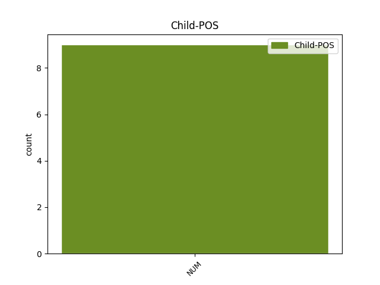

Distribution of features within this leaf


Agreement Rules sorted by frequency.
- When the dependent token is the modifer(mod) of the head token, and the head token is NOUN and the dependent token is NUM.
1 Magmula _ _ _ _ 0 _ _ _
2 pa _ _ _ _ 0 _ _ _
3 noong _ _ _ _ 0 _ _ _
4 1965 _ _ _ _ 0 _ _ _
5 , _ _ _ _ 0 _ _ _
6 nakapagbenta _ _ _ _ 0 _ _ _
7 na _ _ _ _ 0 _ _ _
8 si _ _ _ _ 0 _ _ _
9 Jones _ _ _ _ 0 _ _ _
10 na _ _ _ _ 0 _ _ _
11 mahigit _ _ _ _ 0 _ _ _
12 sa _ _ _ _ 0 _ _ _
13 100 _ _ _ _ 0 _ _ _
14 milyong milyong NUM _ Gender=Masc|Number=Sing 16 mod _ _
15 mga _ _ _ _ 0 _ _ _
16 rekord rekord NOUN _ Gender=Masc 0 _ _ _
17 na _ _ _ _ 0 _ _ _
18 pangmusika _ _ _ _ 0 _ _ _
19 . _ _ _ _ 0 _ _ _
Disagree Examples:
1 Ang _ _ _ _ 0 _ _ _
2 Australasia _ _ _ _ 0 _ _ _
3 ay _ _ _ _ 0 _ _ _
4 nawalay _ _ _ _ 0 _ _ _
5 sa _ _ _ _ 0 _ _ _
6 ibang _ _ _ _ 0 _ _ _
7 mga _ _ _ _ 0 _ _ _
8 kontinente _ _ _ _ 0 _ _ _
9 sa _ _ _ _ 0 _ _ _
10 loob _ _ _ _ 0 _ _ _
11 ng _ _ _ _ 0 _ _ _
12 mga _ _ _ _ 0 _ _ _
13 milyong milyong NUM _ Gender=Masc|Number=Sing 14 mod _ _
14 taon taon NOUN _ Definite=Ind|Gender=Neut|Number=Plur 0 _ _ _
15 . _ _ _ _ 0 _ _ _
1 Ang _ _ _ _ 0 _ _ _
2 bunga _ _ _ _ 0 _ _ _
3 nito _ _ _ _ 0 _ _ _
4 ay _ _ _ _ 0 _ _ _
5 siya _ _ _ _ 0 _ _ _
6 ay _ _ _ _ 0 _ _ _
7 mapupurga _ _ _ _ 0 _ _ _
8 nang _ _ _ _ 0 _ _ _
9 dalawang dalawang NUM _ Case=Acc|Gender=Masc|Number=Plur|NumType=Card 10 mod _ _
10 beses beses NOUN _ Definite=Ind|Gender=Neut|Number=Plur 0 _ _ _
11 sa _ _ _ _ 0 _ _ _
12 Himagsikan _ _ _ _ 0 _ _ _
13 sa _ _ _ _ 0 _ _ _
14 Kultura _ _ _ _ 0 _ _ _
15 ngunit _ _ _ _ 0 _ _ _
16 nanatiling _ _ _ _ 0 _ _ _
17 kilala _ _ _ _ 0 _ _ _
18 noong _ _ _ _ 0 _ _ _
19 1978 _ _ _ _ 0 _ _ _
20 sa _ _ _ _ 0 _ _ _
21 pamamagitan _ _ _ _ 0 _ _ _
22 ng _ _ _ _ 0 _ _ _
23 pagtapon _ _ _ _ 0 _ _ _
24 sa _ _ _ _ 0 _ _ _
25 piling _ _ _ _ 0 _ _ _
26 hahalili _ _ _ _ 0 _ _ _
27 kay _ _ _ _ 0 _ _ _
28 mao _ _ _ _ 0 _ _ _
29 na _ _ _ _ 0 _ _ _
30 si _ _ _ _ 0 _ _ _
31 Hua _ _ _ _ 0 _ _ _
32 Guofeng _ _ _ _ 0 _ _ _
33 . _ _ _ _ 0 _ _ _
1 Ang _ _ _ _ 0 _ _ _
2 mga _ _ _ _ 0 _ _ _
3 natitirang _ _ _ _ 0 _ _ _
4 ang _ _ _ _ 0 _ _ _
5 band _ _ _ _ 0 _ _ _
6 nagulat _ _ _ _ 0 _ _ _
7 siya _ _ _ _ 0 _ _ _
8 sa _ _ _ _ 0 _ _ _
9 pamamagitan _ _ _ _ 0 _ _ _
10 ng _ _ _ _ 0 _ _ _
11 pagdating _ _ _ _ 0 _ _ _
12 sa _ _ _ _ 0 _ _ _
13 tao _ _ _ _ 0 _ _ _
14 upang _ _ _ _ 0 _ _ _
15 magbigay _ _ _ _ 0 _ _ _
16 sa _ _ _ _ 0 _ _ _
17 kanya _ _ _ _ 0 _ _ _
18 ng _ _ _ _ 0 _ _ _
19 suporta _ _ _ _ 0 _ _ _
20 , _ _ _ _ 0 _ _ _
21 pagmamarka _ _ _ _ 0 _ _ _
22 sa _ _ _ _ 0 _ _ _
23 unang _ _ _ _ 0 _ _ _
24 pagkakataon _ _ _ _ 0 _ _ _
25 na _ _ _ _ 0 _ _ _
26 Backstreet _ _ _ _ 0 _ _ _
27 Boys _ _ _ _ 0 _ _ _
28 ay _ _ _ _ 0 _ _ _
29 lumitaw _ _ _ _ 0 _ _ _
30 magkasama _ _ _ _ 0 _ _ _
31 sa _ _ _ _ 0 _ _ _
32 publiko _ _ _ _ 0 _ _ _
33 sa _ _ _ _ 0 _ _ _
34 halos _ _ _ _ 0 _ _ _
35 dalawang dalawang NUM _ Definite=Ind|Gender=Masc|Number=Plur|NumType=Card 36 mod _ _
36 taon taon NOUN _ Definite=Ind|Gender=Neut|Number=Plur 0 _ _ _
37 . _ _ _ _ 0 _ _ _
1 Habang _ _ _ _ 0 _ _ _
2 propesor _ _ _ _ 0 _ _ _
3 sa _ _ _ _ 0 _ _ _
4 Munich _ _ _ _ 0 _ _ _
5 , _ _ _ _ 0 _ _ _
6 naglakbay _ _ _ _ 0 _ _ _
7 siya _ _ _ _ 0 _ _ _
8 nang _ _ _ _ 0 _ _ _
9 dalawang dalawang NUM _ Definite=Ind|Gender=Masc|Number=Plur|NumType=Card 10 mod _ _
10 beses beses NOUN _ Definite=Ind|Gender=Fem|Number=Plur 0 _ _ _
11 sa _ _ _ _ 0 _ _ _
12 buong _ _ _ _ 0 _ _ _
13 mundo _ _ _ _ 0 _ _ _
14 . _ _ _ _ 0 _ _ _
1 Halimabawa _ _ _ _ 0 _ _ _
2 , _ _ _ _ 0 _ _ _
3 ang _ _ _ _ 0 _ _ _
4 salawikaing _ _ _ _ 0 _ _ _
5 " _ _ _ _ 0 _ _ _
6 Mądrej _ _ _ _ 0 _ _ _
7 głowie _ _ _ _ 0 _ _ _
8 dość _ _ _ _ 0 _ _ _
9 dwie _ _ _ _ 0 _ _ _
10 słowie _ _ _ _ 0 _ _ _
11 " _ _ _ _ 0 _ _ _
12 ( _ _ _ _ 0 _ _ _
13 Ang _ _ _ _ 0 _ _ _
14 dalawang _ _ _ _ 0 _ _ _
15 salita _ _ _ _ 0 _ _ _
16 ay _ _ _ _ 0 _ _ _
17 pupuwede _ _ _ _ 0 _ _ _
18 na _ _ _ _ 0 _ _ _
19 sa _ _ _ _ 0 _ _ _
20 may _ _ _ _ 0 _ _ _
21 matalinong _ _ _ _ 0 _ _ _
22 ulo _ _ _ _ 0 _ _ _
23 ) _ _ _ _ 0 _ _ _
24 ay _ _ _ _ 0 _ _ _
25 mukhang _ _ _ _ 0 _ _ _
26 mali _ _ _ _ 0 _ _ _
27 sa _ _ _ _ 0 _ _ _
28 balarila _ _ _ _ 0 _ _ _
29 ( _ _ _ _ 0 _ _ _
30 " _ _ _ _ 0 _ _ _
31 Mądrej _ _ _ _ 0 _ _ _
32 głowie _ _ _ _ 0 _ _ _
33 dość _ _ _ _ 0 _ _ _
34 dwa dwa NUM _ Animacy=Inan|Case=Acc|Gender=Masc|Number=Plur 35 mod _ _
35 słowa słowo NOUN _ Case=Nom|Gender=Neut|Number=Plur 0 _ _ _
36 " _ _ _ _ 0 _ _ _
37 ) _ _ _ _ 0 _ _ _
38 , _ _ _ _ 0 _ _ _
39 pero _ _ _ _ 0 _ _ _
40 ito _ _ _ _ 0 _ _ _
41 ay _ _ _ _ 0 _ _ _
42 isang _ _ _ _ 0 _ _ _
43 dalawahan _ _ _ _ 0 _ _ _
44 . _ _ _ _ 0 _ _ _